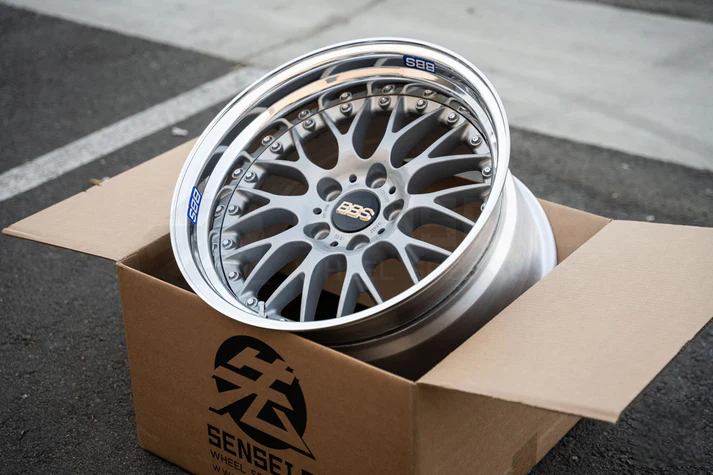

Alibaba, Cheap Easy and Quick...


Felgi BBS Syling 42 to wysokiej jakiości felgi wielo częściowe. Idealny sposób na odświeżenie wyglądu Twojego auta i nadanie mu agresywnego, sportowego charakteru. BBS to wiodący producent obręczy ze stopów lekkich, które charakteryzuje wysoka wytrzymałość oraz niepowtarzalne wzornictwo. Flagowe modele obręczy niemieckiego producenta są rozpoznawalne na całym świecie, a ich właściciele z dumą prezentują swoje samochody na wielu imprezach motoryzacyjnych i nie tylko. W skrócie klasa sama w sobie.
Specyfikacja produktu:

Zasługujesz na felgi, które są czymś więcej niż tylko kawałkiem metalu. Te nowe felgi w kultowym wzorze mesh to idealne połączenie klasycznego designu, który zdefiniował najlepsze ery motoryzacji, z nowoczesną technologią i niezawodnością. Przepiękny, polerowany na lustro rant dodaje im niesamowitej głębi i luksusowego sznytu, przyciągając wzrok na każdym zlocie i podczas codziennej jazdy. Klasyczny centralny kołpaczek z dbałością o najmniejsze detale to hołd dla motoryzacyjnej tradycji, podkreślający Twój wyrafinowany gust – to po prostu prawdziwa biżuteria dla Twojego auta. Wykonane z najwyższej jakości kutego aluminium, są niezwykle trwałe i odporne na uszkodzenia, a jednocześnie piórkowo lekkie. Taka konstrukcja przekłada się na świetną dynamikę prowadzenia i najwyższy komfort. Otrzymujesz produkt fabrycznie nowy, całkowicie bezkompromisowy i od razu gotowy do montażu.